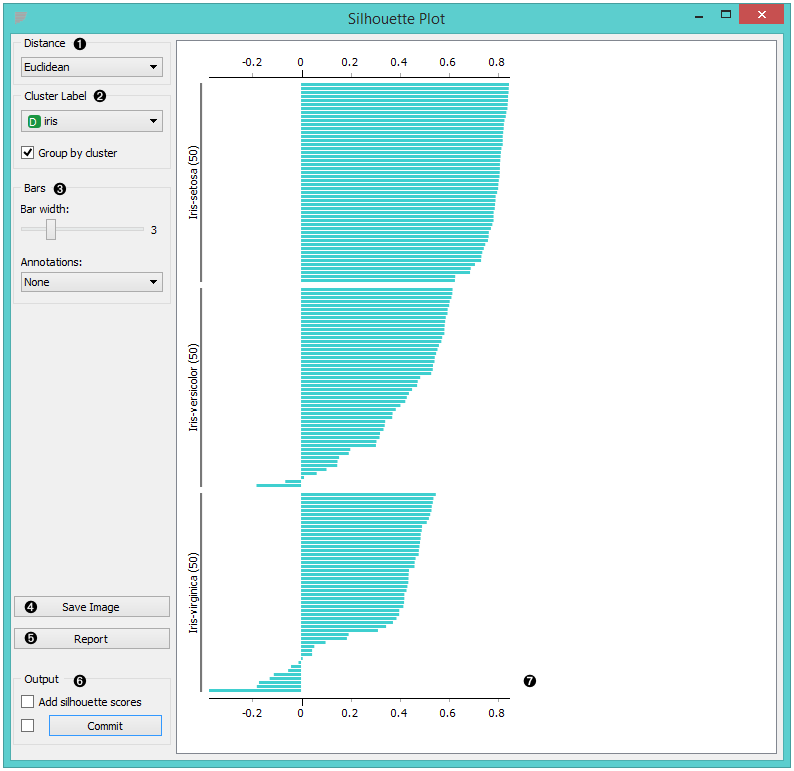
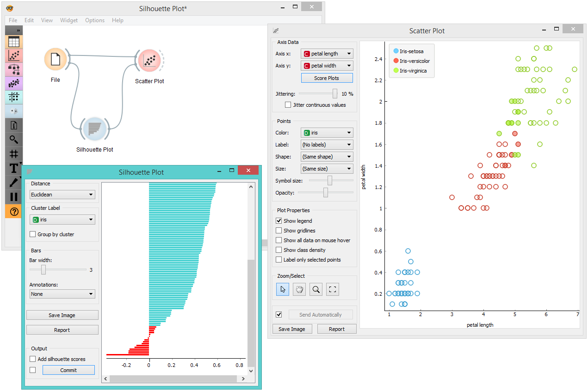

Silhouette Plot
A graphical representation of consistency within clusters of data.
Inputs
- Data: input dataset
Outputs
- Selected Data: instances selected from the plot
- Data: data with an additional column showing whether a point is selected
The Silhouette Plot widget offers a graphical representation of consistency within clusters of data and provides the user with the means to visually assess cluster quality. The silhouette score is a measure of how similar an object is to its own cluster in comparison to other clusters and is crucial in the creation of a silhouette plot. The silhouette score close to 1 indicates that the data instance is close to the center of the cluster and instances possessing the silhouette scores close to 0 are on the border between two clusters.

- Choose the distance metric. You can choose between:
- Select the cluster label. You can decide whether to group the instances by cluster or not.
- Display options:
- Choose bar width.
- Annotations: annotate the silhouette plot.
- Save Image saves the created silhouette plot to your computer in a .png or .svg format.
- Produce a report.
- Output:
- Add silhouette scores (good clusters have higher silhouette scores)
- By clicking Commit, changes are communicated to the output of the widget. Alternatively, tick the box on the left and changes will be communicated automatically.
- The created silhouette plot.
Example
In the snapshot below, we have decided to use the Silhouette Plot on the iris dataset. We selected data instances with low silhouette scores and passed them on as a subset to the Scatter Plot widget. This visualization only confirms the accuracy of the Silhouette Plot widget, as you can clearly see that the subset lies in the border between two clusters.

If you are interested in other uses of the Silhouette Plot widget, feel free to explore our blog post.